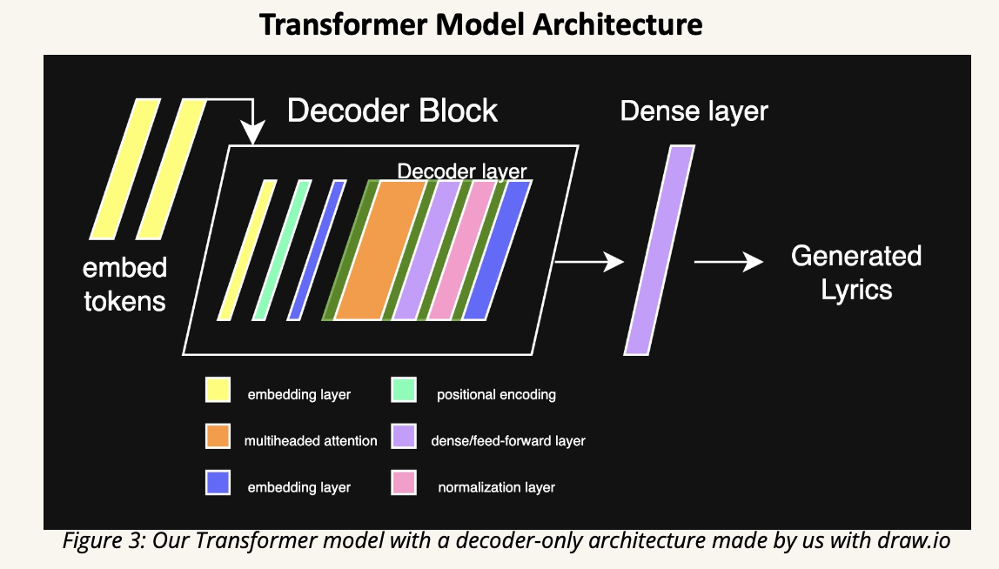
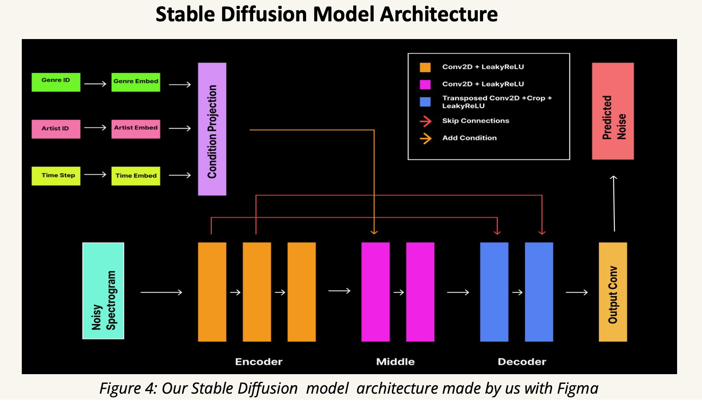

Melodic
&&
Machines
Overview
Melodic Machines is a dual-model generative AI system designed to produce artist-conditioned music outputs by combining two distinct architectures: a Transformer model for lyric generation and a Stable Diffusion model for audio spectrogram synthesis.
- Goal: Automate music generation while preserving artistic style.
- Architecture: Lyrics and spectrograms generated independently then paired.
- Innovation: Uses artist/genre conditioning for stylistic control.
Data Pipeline
- Lyrics Model: Famous artist-lyric pairs from Kaggle, cleaned and split into train/test sets.
- Spectrogram Model: Used FreeMusicArchive (FMA) audio and genre-tagged mp3 files, converted into spectrograms.
Model Architectures
Transformer
Autoregressive decoder-only transformer model trained to predict next token in artist-specific lyrics.
Stable Diffusion
Conditional U-Net trained on spectrograms to generate audio representations given artist & genre embeddings.
Results
Transformer achieves meaningful stylistic similarity; diffusion model shows visually coherent spectrograms, though improvements are needed in fine detail rendering and waveform fidelity.
Discussion & Ethics
- Bias: Generated content may unintentionally reinforce artist stereotypes.
- Attribution: Generated media risks misrepresenting real-world creators.
- Training Limitation: Style modeling quality highly dependent on dataset granularity and balance.
Acknowledgments
Created as a final project for CSCI 1470: Deep Learning at Brown University. Special thanks to Prof. Eric Ewing and our mentors for their support and feedback on model design and evaluation.